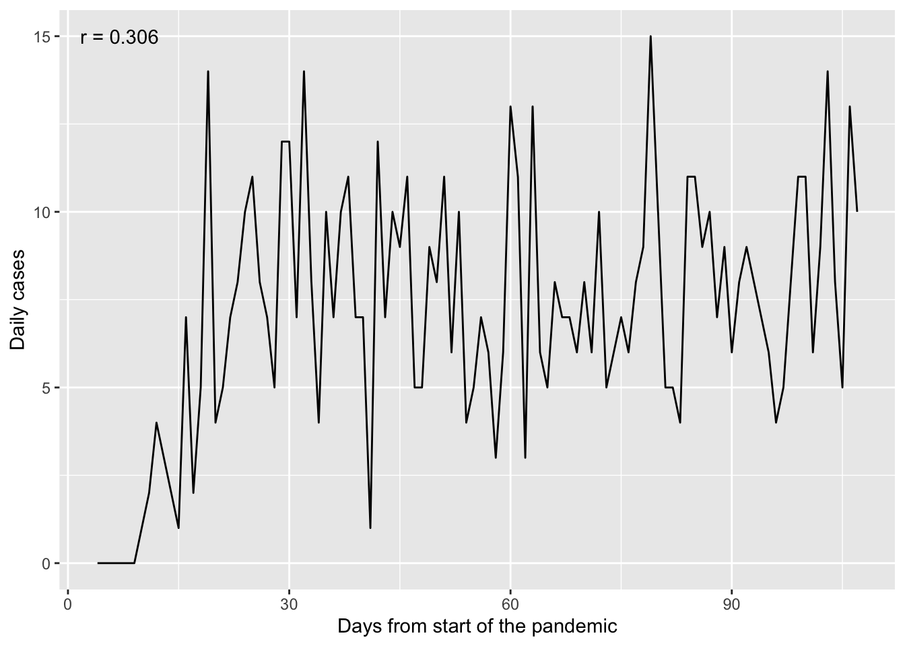
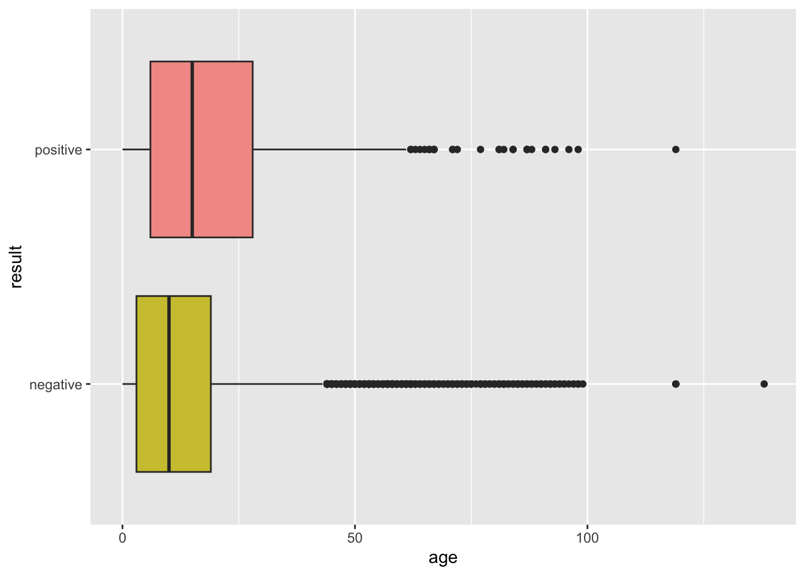

Code
library(broom)
library(cowplot)
library(dplyr)
library(ggplot2)
library(ggpointdensity)
library(gtsummary)
library(medicaldata)
library(skimr)
library(unibeCols)library(broom)
library(cowplot)
library(dplyr)
library(ggplot2)
library(ggpointdensity)
library(gtsummary)
library(medicaldata)
library(skimr)
library(unibeCols)The aim of this work is to evaluate the association between the incidence of covid 19 and some demographic characteristics. For this purpose, I will work on the data covid_testing from the library medicaldata, that is a dataset containing details of SARS-CoV-2 testing in 2020 at the Children’s Hospital of Philadelphia, Pennsylvania (CHOP).
covid_testing_raw <- medicaldata::covid_testingWe proceed with an initial data manipulation. We exclude the subects with an invalid result in the test
covid_testing <- covid_testing_raw %>%
filter(result != "invalid") %>%
mutate(outcome = as.numeric(result == "positive")) %>%
distinct()
head(covid_testing)length(unique(covid_testing$subject_id)) ; nrow(covid_testing)[1] 12301[1] 15223This means that some subjects have more than one measurements. How should we deal with that? We have some options:
We ignore it. It is not relevant to the analysis whether we have two different testings
We keep either the first or the last, considering that there might be correlations between the events (e.g. subjects that have already been positive have higher probability of compared to children that have never been tested positive)
I decided to go with the second option and keep only the results of the first covid test performed on each child:
covid_testing <- covid_testing %>%
arrange(subject_id, pan_day) %>%
group_by(subject_id) %>%
slice(1) %>%
ungroup()skim_without_charts(covid_testing)| Name | covid_testing |
| Number of rows | 12301 |
| Number of columns | 18 |
| _______________________ | |
| Column type frequency: | |
| character | 9 |
| numeric | 9 |
| ________________________ | |
| Group variables | None |
Variable type: character
| skim_variable | n_missing | complete_rate | min | max | empty | n_unique | whitespace |
|---|---|---|---|---|---|---|---|
| fake_first_name | 0 | 1.00 | 3 | 13 | 0 | 832 | 0 |
| fake_last_name | 0 | 1.00 | 4 | 11 | 0 | 27 | 0 |
| gender | 0 | 1.00 | 4 | 6 | 0 | 2 | 0 |
| test_id | 0 | 1.00 | 5 | 5 | 0 | 2 | 0 |
| clinic_name | 0 | 1.00 | 3 | 32 | 0 | 81 | 0 |
| result | 0 | 1.00 | 8 | 8 | 0 | 2 | 0 |
| demo_group | 0 | 1.00 | 6 | 12 | 0 | 5 | 0 |
| payor_group | 6550 | 0.47 | 5 | 18 | 0 | 7 | 0 |
| patient_class | 6546 | 0.47 | 9 | 23 | 0 | 9 | 0 |
Variable type: numeric
| skim_variable | n_missing | complete_rate | mean | sd | p0 | p25 | p50 | p75 | p100 |
|---|---|---|---|---|---|---|---|---|---|
| subject_id | 0 | 1.00 | 6169.13 | 3562.86 | 1.00 | 3084.0 | 6169.0 | 9251.0 | 12346.0 |
| pan_day | 0 | 1.00 | 60.51 | 27.42 | 4.00 | 36.0 | 61.0 | 85.0 | 107.0 |
| age | 0 | 1.00 | 15.57 | 17.00 | 0.00 | 3.0 | 11.0 | 19.0 | 138.0 |
| drive_thru_ind | 0 | 1.00 | 0.56 | 0.50 | 0.00 | 0.0 | 1.0 | 1.0 | 1.0 |
| ct_result | 72 | 0.99 | 44.04 | 4.20 | 14.05 | 45.0 | 45.0 | 45.0 | 45.0 |
| orderset | 0 | 1.00 | 0.76 | 0.43 | 0.00 | 1.0 | 1.0 | 1.0 | 1.0 |
| col_rec_tat | 0 | 1.00 | 8.58 | 553.61 | 0.00 | 0.9 | 2.1 | 3.9 | 61370.2 |
| rec_ver_tat | 0 | 1.00 | 5.45 | 4.04 | 0.00 | 4.0 | 5.0 | 6.0 | 218.2 |
| outcome | 0 | 1.00 | 0.06 | 0.24 | 0.00 | 0.0 | 0.0 | 0.0 | 1.0 |
g <- covid_testing %>% group_by(pan_day) %>%
summarize(cases_per_day = sum(result == "positive"))
cor.time.cases <- round(cor(g$pan_day, g$cases_per_day, method = "spearman"), 3)
ggplot(data = g, aes(x = pan_day, y = cases_per_day)) +
geom_line() +
annotate("text", x = 7, y = 15, label = paste("r =", cor.time.cases)) +
labs(x = "Days from start of the pandemic",
y = "Daily incidence")
ggplot(data = covid_testing, aes(x = age, y = result, fill = result)) +
geom_boxplot() +
scale_fill_manual(breaks = c("positive", "negative"),
values = c(unibeRedS()[2], unibeMustardS()[2])) +
theme(legend.position = "none")
p1 <- ggplot(data = covid_testing, aes(x = pan_day, y = age, col = result)) +
geom_point(size = 1) +
scale_color_manual(breaks = c("positive", "negative"),
values = c(unibeRedS()[1], unibeMustardS()[2])) +
labs(x = "Days after start of pandemic", y = "Age",
col = "Test result") +
theme(legend.position = "bottom")
p2 <- ggplot(data = covid_testing, aes(x = pan_day, y = age)) +
geom_pointdensity(size = 1) +
labs(x = "Days after start of pandemic", y = "Age") +
theme(legend.position = "bottom")
cowplot::plot_grid(plotlist = list(p1, p2), align = "h", labels = c("A", "B"))
mod <- glm(outcome ~ gender + pan_day + age + drive_thru_ind,
data = covid_testing, family = "binomial")
tbl_regression(mod, exponentiate = TRUE)| Characteristic | OR | 95% CI | p-value |
|---|---|---|---|
| gender | |||
| female | — | — | |
| male | 0.94 | 0.81, 1.09 | 0.4 |
| pan_day | 1.00 | 0.99, 1.00 | 0.067 |
| age | 1.01 | 1.01, 1.02 | <0.001 |
| drive_thru_ind | 1.01 | 0.87, 1.17 | >0.9 |
| Abbreviations: CI = Confidence Interval, OR = Odds Ratio | |||